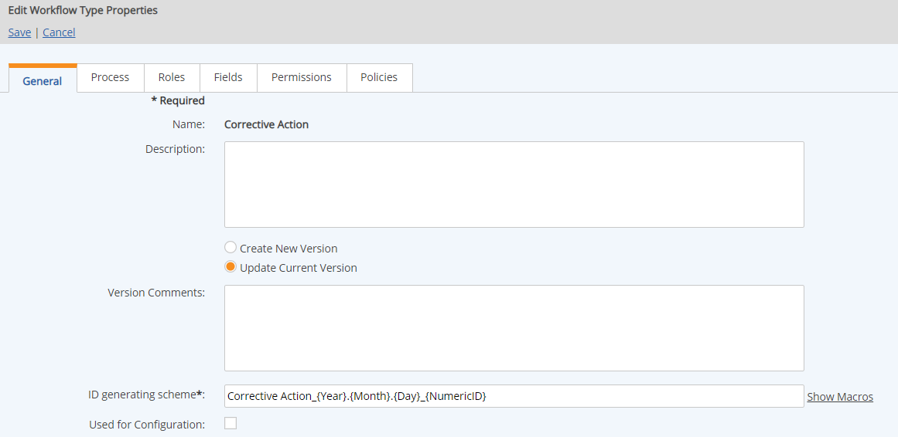

To edit a workflow type:
In the Workflow Types page (Setup > Workflows > Types), right click the workflow and choose Edit.
The Workflow Type Editor opens with six tabs for editing. A schematic diagram of the workflow is also displayed.
On the General tab you may edit the following fields:
Description: General description of the workflow
Version comments: Comments associated with the current version of the workflow. See Workflow Versions.
ID generating scheme: Format for generating the unique ID for workflow instances. See Workflow ID Generating Scheme.
Used for configuration: Flag for workflows that are used for App configuration. (Workflows may be searched by this flag.)

Choose whether you want to edit the current version of the workflow or create a new version.
If there are existing instances of the workflow, you will be required to create a new version.
If this is a new version of the workflow type, adding optional version comments can help to identify changes.
When you create a new version of a workflow type, be aware that it may affect existing Policies (including Policy Overrides) when those policies reference specific steps, form fields or Roles. You may need to edit the associated policies as well. Notification templates may also be affected if they use those variables.
For other tab editing options, see:
To edit the workflow type name:
In Workflow Type Manager, right click the workflow type and choose Rename.
The workflow type name is limited to 256 characters. If the workflow type name is used in the id generating scheme, which has a limit of 60 characters, it will also need to be short enough not to exceed that limit in combination with other generating scheme components.
To create a copy of a workflow:
Deleting a workflow type:
If there are existing instances of the workflow, an error message will appear and the existing instances will be listed. If there are no existing instances, confirm by clicking Delete.
A workflow may be deleted only if there are no existing instances.